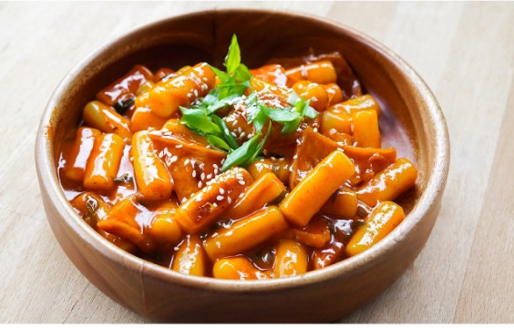
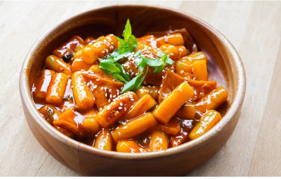

Південна Корея
Про країну
Корея – дуже безпечна країна. Територія країни дуже маленька, тому цивілізація проникла у всі її куточки. У Кореї неможливо заблукати, і зовсім глухих сіл тут немає. Найпопулярніший вид спорту в Кореї – бейсбол. У нього грають усі, від малого до великого, бейсбольна біта є практично у кожного. Ходити по горах – це таке улюблена розвага для корейців. Вони можуть встати о 8 ранку після дикої пиятики і все одно полізти на гору. Вітчизняний продукт в Кореї дуже підтримується, тому багатьох імпортних товарів, таких як зубні пасти, жуйки, прокладки, чипси і т. д. – не знайти.
Національні страви
Кімічі
Топоки
 

Морква по корейські
Салат з фунчози
Тури до південної Кореї
Тривалість туру: 8 днів / 7 ночей.
Маршрут туру: Сеул, Пусан.
Тривалість туру: 10 днів / 9 ночей.
Маршрут туру: Сувон, Національний парк
Тривалість туру: 9 днів/8 ночей.
Маршрут туру: Йонін - Сувон - Пусан - Кенджу - острів Чеджу.